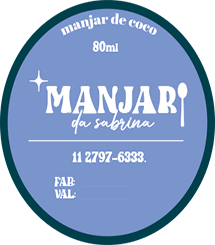
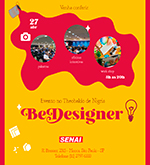
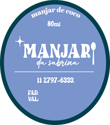
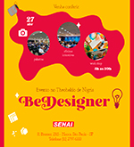
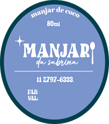
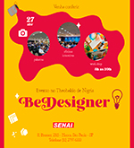
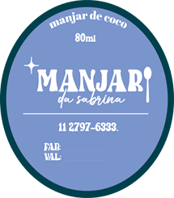
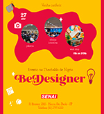

 


desenvolvimento de logo para saparia, com o objetivo de ser elegante e marcante a logo foi produzida nas cores preta e vermelha.
- rotulo para manjar, O projeto busca demonstrar o que a marca/ rotulo gostaria de transmitir, simplicidade, doçura, delicadeza e exclusividade, isso foi possível através da paleta de cores, tipografia e símbolos atuais...
post produzido para divulgar evento em escola, com o objetivo de chamar atenção e atrai-los para visitar o evento, para logo utiliza se uma fonte “divertida”, saindo do convencional, e a paleta de cores foi pensada para atrair o público jovem e demostrar os valores do evento que é aprendizagem, criatividade e força.